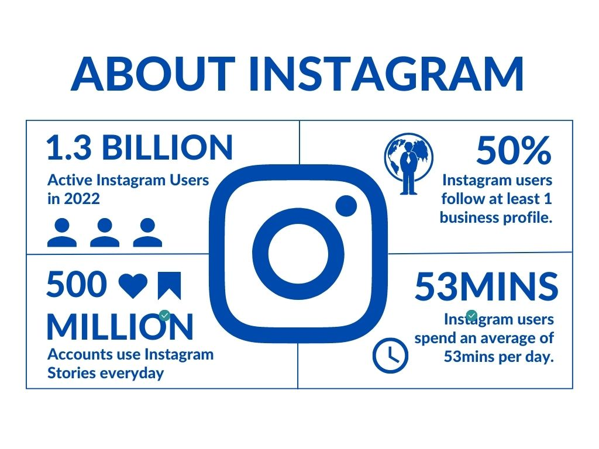

Instagram
Instagram is a social networking site that enables users to upload photos and videos as well as interact with others by following, like, commenting, and direct messaging.

Main functions of Instagram
- A user's Instagram profile might be personal or professional. They may provide details about themselves or their brand, as well as show off their images and videos.
- Users may browse their feeds to see images and videos from the accounts they follow in addition to discovering new material by using hashtags and other tools for discovery.
- Using hashtags, tags, and location, users may create and post images and videos to their Instagram accounts.
- Instagram stories are posts that only last for 24 hours. Users may add text, stickers, filters, and more to images and videos that they publish to their stories.
- In addition to sharing images and videos, Instagram's direct messaging features enable users to communicate privately with one another.
Benefits that Instagram brings
- Instagram enables users to interact with others and create a network of friends and followers. Finding new information and ideas is also beneficial, as well as relationships on a personal and professional level.
- Instagram provides a variety of marketing and advertising solutions for organizations, including influencer collaborations, paid advertising, and e-commerce features. By doing this, businesses may increase sales and conversions by reaching their target market.
- Users may easily discover new material and ideas on Instagram and gain inspiration for their own creative efforts thanks to the app's explore capabilities and hashtags.
- Instagram gives users the chance to create groups based on common hobbies and interests. Users may interact meaningfully and collaborate with others who have similar interests by finding people who share their passions.
New Media